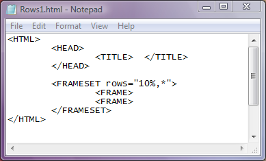
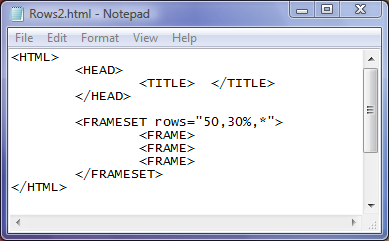
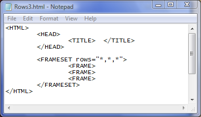

Atributul rows
Atributul rows seteaza numarul de cadre orizontale, cadre rand, adica divide fereastra
browserului in numarul dorit de cadre. Valorile atributului rows pot fi fie numere reprezentand
inaltimea cadrului exprimat in pixeli, fie procent din inaltimea ferestrei browserului, fie asterix "*"
reprezentand restul portiunii din inaltimea ferestrei. In continuare, vom arata mai intai o pagina web
divizata de doua cadre orizontale, primul cu inaltimea de 10% din inaltimea ferestrei iar al doilea
ocupand restul ferestrei:

Dati click pe cod pentru a afisa pagina web...
Iata in continuare un exemplu in care sunt setate trei cadre orizontale (cadre rand), in care
primul este de inaltime 50 pixeli, al doilea este de latime 30% din inaltimea ferestrei iar al treilea
ocupa restul ferestrei:

Un ultim exemplu, in care sunt setate trei cadre orizontale de latimi egale intre ele este prezentat
mai jos:

OBSERVATII
1)Pentru a fi afisate cadrele in browser, este necesar ca pentru fiecare cadru setat in eticheta FRAMESET
sa fie declarat cadrul printr-o eticheta FRAME. Altfel portiunea de fereastra alocata cadrului va fi
nefolosita.
2)Marginile cadrelor in acest moment sunt mobile, ele putand fi deplasate prin tragere cu mouse-ul
mai in sus sau mai in jos. Dati click pe codul unei pagi web de mai sus si verificati acest lucru.
Pentru ca acele chenare sa revina la pozitia initiala la care au fost setate prin cod, dati click pe butonul
Refresh pentru reincarcarea paginii cu valorile initiale.
Inapoi la Cadre...